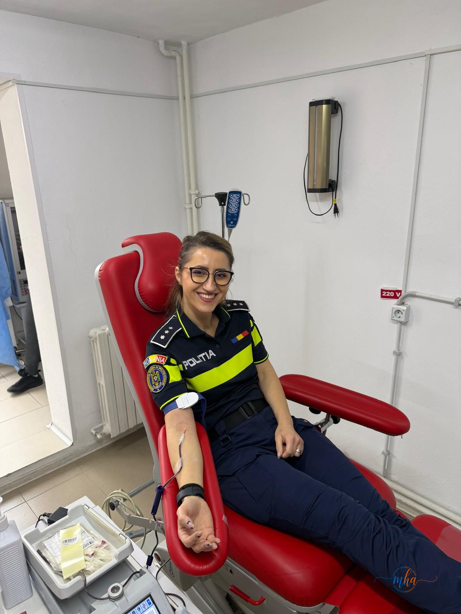
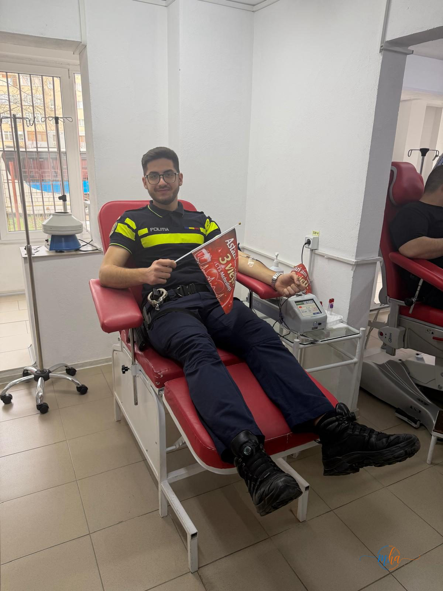
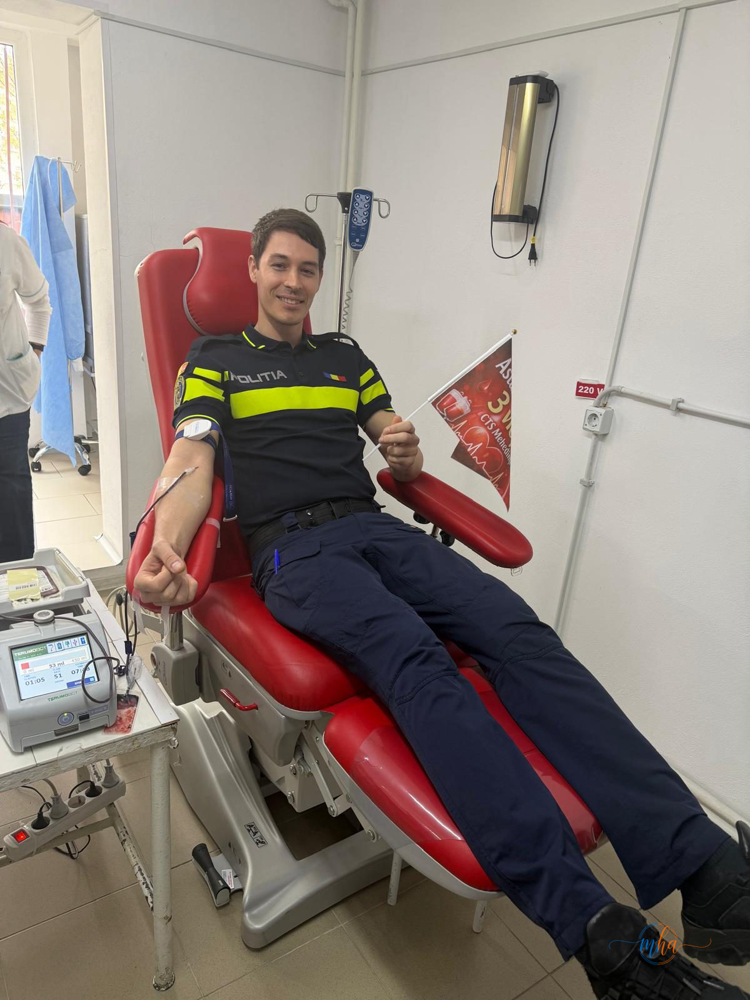
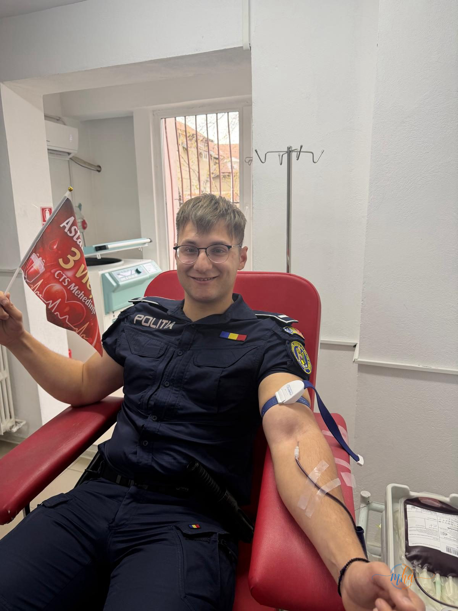

Luni, 31 martie 2026, polițiștii din cadrul Poliției municipiului Drobeta-Turnu Severin au dat dovadă de solidaritate și implicare civică, participând la o acțiune de donare de sânge. Nu mai puțin de 20 de ofițeri și agenți de poliție au ales să facă acest gest voluntar, contribuind direct la completarea stocurilor de sânge necesare salvării de vieți omenești.
🩸 Date acțiune — Donare sânge Poliția Drobeta
| Data | 31 Martie 2026 |
| Instituție | Poliția municipiului Drobeta-Turnu Severin |
| Număr donatori | 20 polițiști |
| Tip acțiune | Donare voluntară de sânge |
| Scop | Sprijinirea persoanelor cu nevoie urgentă de transfuzii |
Un gest care poate salva până la trei vieți
Fiecare donare de sânge poate contribui la salvarea a până la trei vieți omenești. Prin cei 20 de polițiști care au participat la această acțiune, Poliția municipiului Drobeta-Turnu Severin a contribuit cu o cantitate semnificativă de sânge la băncile de sânge din județ, venind în ajutorul pacienților aflați în situații critice — victime ale accidentelor rutiere, bolnavi care au nevoie de intervenții chirurgicale urgente sau pacienți cu afecțiuni hematologice.
Donarea de sânge este un act de solidaritate umană esențial, mai ales în contextul în care stocurile de sânge din spitalele românești sunt în mod constant deficitare. Fiecare pungă de sânge donată poate face diferența în momente în care fiecare minut contează.




Polițiști din Drobeta-Turnu Severin la Centrul de Transfuzie Sanguină Mehedinți | Foto: IPJ Mehedinți
Polițiștii transmit un mesaj comunității
Prin acest gest, polițiștii mehedințeni transmit un mesaj puternic de solidaritate și responsabilitate civică întregii comunități din Drobeta-Turnu Severin și din județul Mehedinți. Ei arată că implicarea față de semeni nu se oprește la purtarea uniformei, ci se extinde și în afara orelor de serviciu, sub forma unor acte voluntare cu impact real asupra vieților oamenilor.
„Prin acest gest, polițiștii transmit un mesaj de solidaritate și încurajează cetățenii să se alăture unor astfel de inițiative. Donarea de sânge rămâne un act voluntar esențial, care poate face diferența în momente critice."
— Poliția municipiului Drobeta-Turnu Severin
Instituția va continua acțiunile umanitare
Reprezentanții Poliției municipiului Drobeta-Turnu Severin au anunțat că aceasta nu este o acțiune singulară. Polițiștii mehedințeni vor continua să susțină și să promoveze acțiunile cu caracter umanitar, implicându-se activ în viața comunității pe care o deservesc.
Acțiunea de astăzi se înscrie într-o serie de inițiative sociale prin care structurile de ordine publică din județul Mehedinți încearcă să construiască o relație mai apropiată cu cetățenii, demonstrând că Poliția nu este doar o instituție de coerciție, ci și un partener activ al comunității.
De ce este important să donezi sânge?
România se confruntă cronic cu un deficit de sânge în spitale, iar donatorii voluntari sunt esențiali pentru menținerea stocurilor necesare. O singură donare durează aproximativ 10-15 minute și nu prezintă riscuri pentru sănătatea donatorului sănătos. Poate dona orice persoană cu vârsta între 18 și 60 de ani, cu o greutate de minimum 50 kg și care îndeplinește condițiile medicale necesare.
Centrele de transfuzie sanguină sunt deschise de luni până vineri. Nu ai nevoie de programare prealabilă. Adresează-te Centrului de Transfuzie Sanguină Drobeta-Turnu Severin sau medicului de familie pentru informații suplimentare.